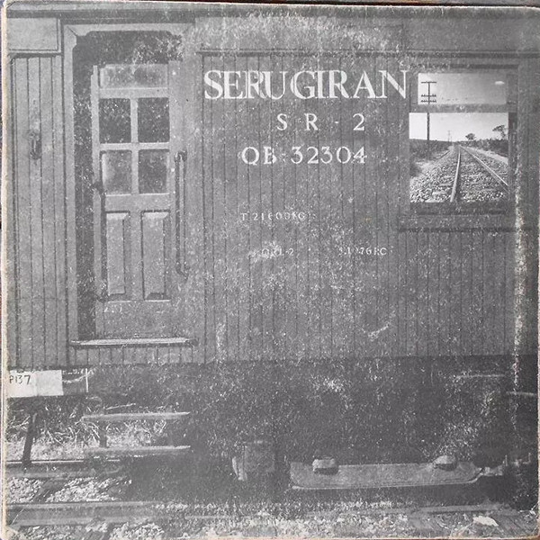
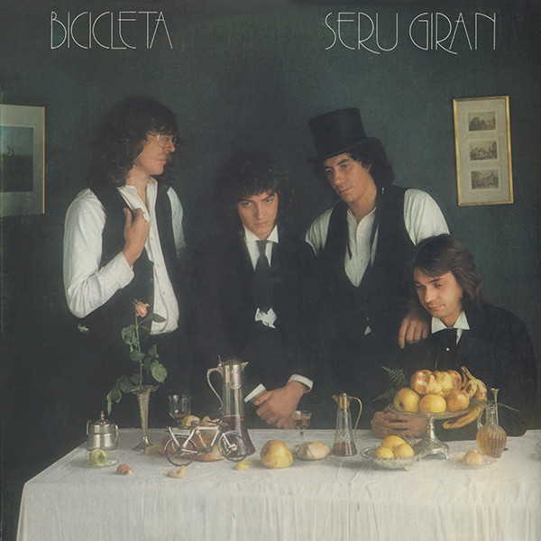
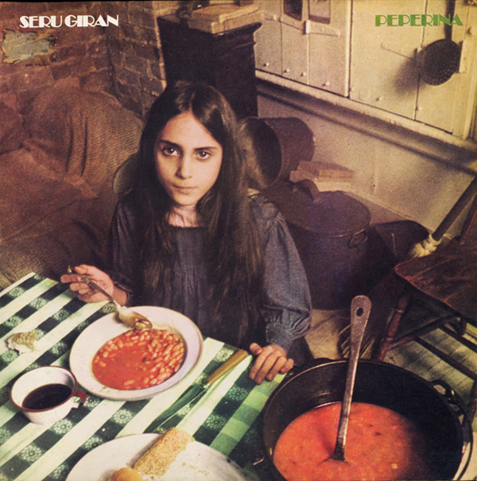
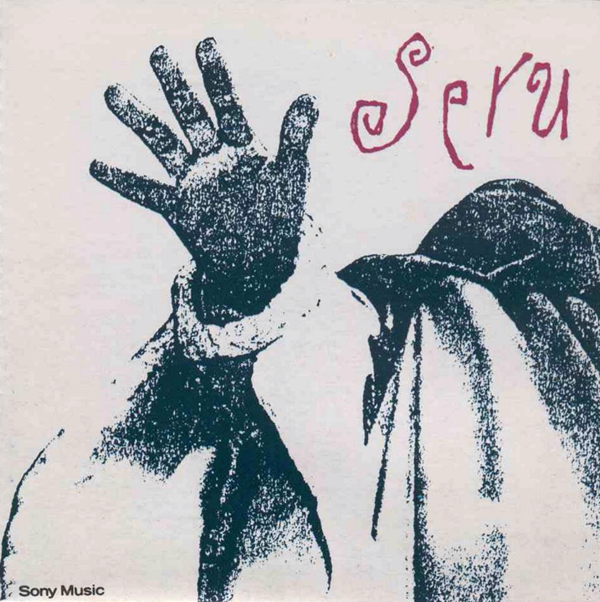
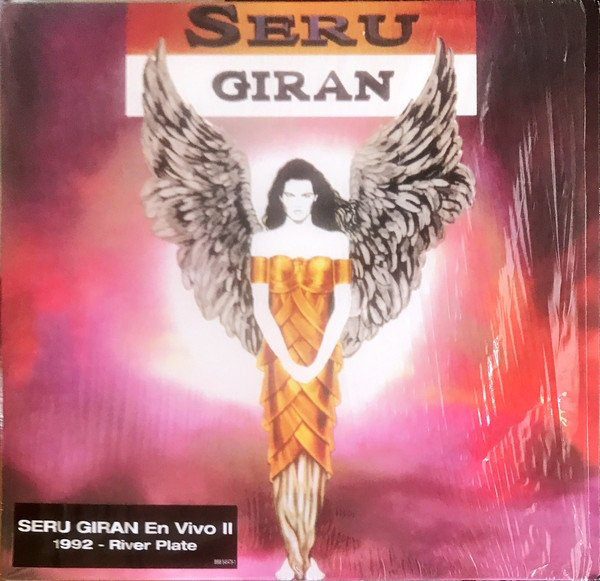
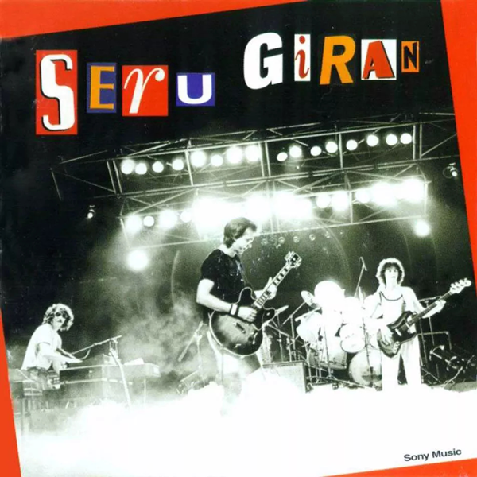

Home
Integrantes
Historia
Discografia
Multimedia
Contacto
"No hay más estrellas que las que dejes brillar"...
Serú Girán
La Grasa de las Capitales
Bicicleta
Peperina



Serú '92
No Llores por Mí Argentina
En Vivo I-II
Yo no quiero Volverme tan Loco


